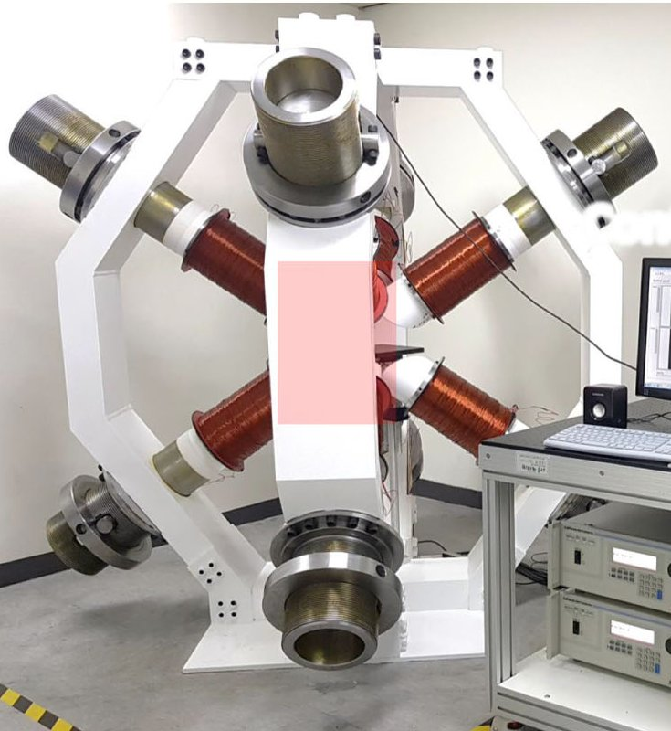

Magnetic navigation · hanyang_lee2020
MCR in CMNS
Multifunctional magnetic catheter robot (MCR) in a closed-loop magnetic navigation system (CMNS)

1 / 4


- Family
- Magnetic navigation (magnetic-navigation)
- Devices
- own MCR: tube with a diametrically magnetized front magnet and drill tip, magnetic joint, two tension springs (26 N/m total), self-expandable stent; max OD 3.5 mm (about 10 Fr), min ID 0.4 mm passes a 0.014-in guidewire (lee2021_steering Sec. IV-A)
- Degrees of freedom
- field direction, magnitude and rotation from 8 electromagnets: steering (static field), tunnelling (rotating field), stent release (field magnitude) (lee2021_steering Sec. II-C)
- Push
- Magnetic
- Twist
- Field direction
- Tested up to
- Phantom
- Sim-to-real
- None found — No simulation-trained controller found for this robot.
Testing
- Highest level
- Phantom
- What was tested
- in vitro only: obstacle table with 4 steering points; stent-release threshold in a straight glass tube (10 trials); stent deployment accuracy in a branched 8 mm glass tube, 10 trials each for MCR and a conventional catheter; Y-shaped water-filled glass tube with a 5% agar clot: steer, tunnel, deploy stent, return (lee2021_steering Sec. IV)
- Key numbers
- steering at 20 mT; tunnelling at 20 mT, 12 Hz; stent release at 78.5 mT on average (theory 59 mT), 100% above 80 mT; stent position error 2.30 +/- 0.34 mm vs 8.79 +/- 0.69 mm for a conventional delivery catheter (lee2021_steering Sec. IV-B)
Mechanism
- Push (translation)
- magnetic (tip steering); advance mechanism N.R. (lee2021_steering)
- Twist (rotation)
- rotating field (20 mT, 12 Hz) spins the front magnet and drill tip for tunnelling (lee2021_steering Sec. IV-B)
- Device range
- MCR OD 3.5 mm
- Target anatomy
- occlusive vascular disease (angioplasty: steering, clot tunnelling, stent delivery) (lee2021_steering Sec. I)
Sensing and interface
- Force sensing
- none
- Leader and haptics
- no: joystick controller (lee2021_steering Fig. 3b)
- Imaging
- biplane cameras (CMOS, 30 fps) only (lee2021_steering Sec. II-B, IV-B)
- Sterility
- N.R.
Size
- Footprint (mm)
- cylindrical workspace up to 500 diameter (lee2021_steering Sec. II-B)
- Mass (kg)
- N.R.
Simulation
- Simulation model
- none found (dynamic model of the magnetic joint for design, lee2021_steering Sec. III)
- Sim-trained controller
- none found
Versions
- Lineage
- CMNS hardware: 8 electromagnets at the vertices of a hexahedron with a back yoke (nam2018_magnetic); MCR with steering, tunnelling and stent-delivery motions (lee2021_steering, online 2020-01-15, IEEE TIE 68(1) 2021)
Sources
- Steering, Tunneling, and Stent Delivery of a Multifunctional Magnetic Catheter Robot to Treat Occlusive Vascular Disease · IEEE Transactions on Industrial Electronics, 2021 · doi:10.1109/tie.2020.2965480 [lee2021_steering]
- Magnetic Navigation System Utilizing a Closed Magnetic Circuit to Maximize Magnetic Field and a Mapping Method to Precisely Control Magnetic Field in Real Time · IEEE Transactions on Industrial Electronics, 2018 · doi:10.1109/tie.2017.2782220 [nam2018_magnetic]
- Remote vascular interventional surgery robotics: a literature review · Quantitative Imaging in Medicine and Surgery, 2022 · doi:10.21037/qims-21-792 [zhao2022_remote]
Notes
- Notes
- Family: magnetic. zhao2022 Table 1 row 17b. Same university as hanyang_crr_kim2023 but a different lab (Jang, not Yi).
This record
- Read level
- full — full (lee2021_steering); figures only (nam2018_magnetic)
- Picture
- lee2021_steering Fig. 3(b), right photo ↗ — licence: publisher copyright; grade C
- Picture changes
- native extract from lee2021_multifunctional-magnetic-catheter_TIE.pdf p. 3; cropped to the CMNS frame; none upscaled
- Found by
- actuated-tip: Search of actuated-tip and magnetic devices.
- Data
- JSON · YAML:
records/robots/hanyang_lee2020.yaml - Correction
- Suggest a correction [repository not created yet]